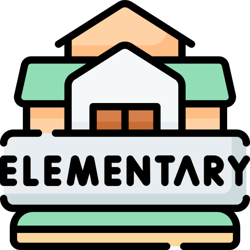
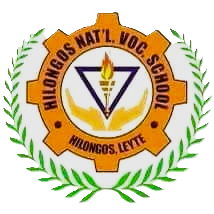
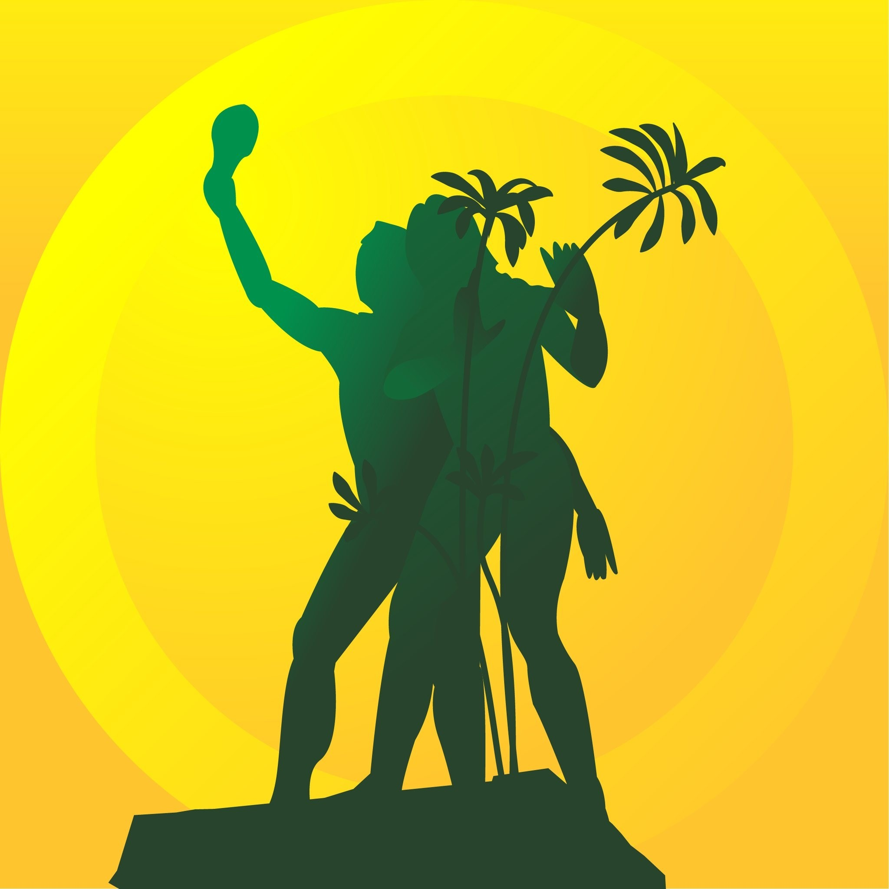
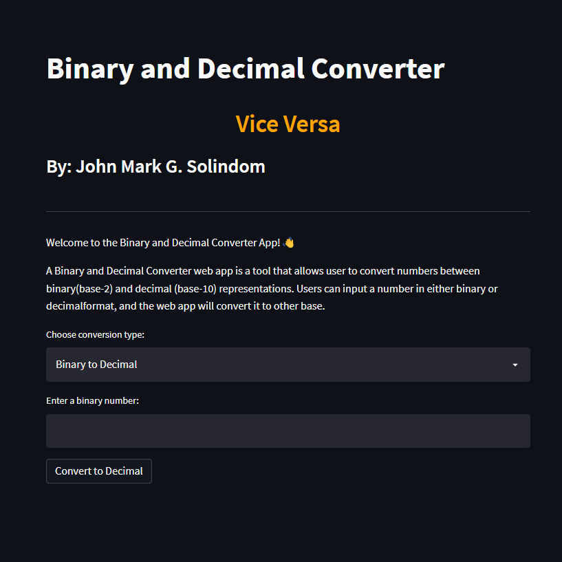
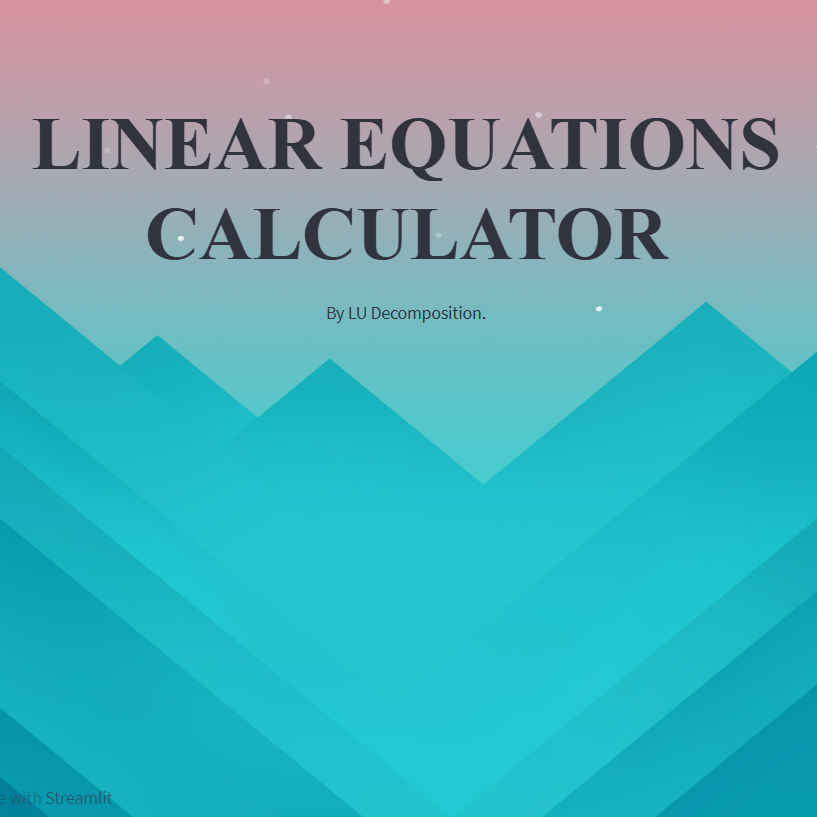

Education is important to me because it provides the knowledge and skills needed to make a positive impact in my chosen field. I'm
particularly intersested in mechanical engineering, and I enjoy exploring new concepts and ideas. Through my studies, I aim to deepen
my understanding and apply what I learn tp real-world challenges. Outside of academics, I also engage in playing mobile games and tilapia
farming, which help me stay balanced and motivated.

Elementary
I studied in Agutayan Elementary School from year 2009 to 2015. During my elementary years, I worked hard to achieve several awards and accomplishments that contributed to my academic and personal
growth. I consistently performed well in my studies, earning recognition in subjects like math, science, and English. I also participated
in extracurricular activities such as school competitions, sports events, and art projects, which helped me develop teamwork, leadership,
and creativity. These early achievements laid a strong foundation for my future education and helped shape me into a well-rounded student
with a passion for learning and self-improvement.
Junior High
I studied in Hitudpan National High School from year 2015 to 2019. In junior high school, I was exposed to a wider range of subjects
and activities that allowed me to explore my skills and passions. My interest in technology and problem solving grew as I discovered
mobile games and coding, both of which became my hobbies. Mobile gaming gave me a way to relax and improve my hand-eye coordination.
Alongside my academic pursuits, I honed practical skills in drawing, which gave me a hands-on approach to learning. These
activities helped me develop patience and attention to detail, qualities that continue to serve me well in my current studies. One
of the most valuable lessons I learned during my education is the importance of kindness and generosity. Throughout my school years,
I have always tried to help others, whether through group projects or by offering support to friends in need.

Senior High
Senior high school was another critical phase in my education. I focused more on science, mathematics, and technology, subjects
that aligned with my growing interest in engineering. Senior high school provided a deeper understanding of these areas and helped
me solidify my career goals. I also became more involved in extracurricular activities, working on group projects and collaborating
with others, which strengthened my leadership and teamwork skills. These experiences taught me the importance of balancing academics
with personal growth, as I continued to develop skills that were not only essential for school but also for life. These traits were
reinforced in senior high school, where teamwork and collaboration were essential parts of the learning experience. I realized that
education is not only about individual success but also about how we contribute to the growth and well-being of others.

College
Now, as a college student pursuing mechanical engineering, I can see how my earlier education laid the foundation for where I am
today. The problem-solving mindset I developed through coding, the technical skills I gained from welding and drawing, and the teamwork
experiences from senior high school have all come together to help me thrive in my current studies. College has introduced me to more
advanced concepts in engineering, and while the challenges have been greater, I've learned to approach them with resilience and a
desire to continuously learn. Throughout my education, one constant has been my commitment to kindness and generosity. Whether it
was helping classmates in junior high or collaborating with peers in college, I've always believed in the power of working together
and supporting others. Education, for me, has been more than just about gaining knowledge it's about how we can use that knowledge
to contribute positively to the world around us. Looking ahead, I am excited to continue learning and growing. My experiences in
junior high, senior high, and college have prepared me for the challenges and opportunities that lie ahead in my career as a
mechanical engineer. I am confident that with the foundation I've built, I will be able to achieve my goals and contribute meaningfully
to my field.
Browse My Recent
Recent Projects
Project 1
Binary to Decimal
This app converts decimal to their equivalent binary representation or vice versa.
A Binary and Decimal Converter web app is a tool that allows user to convert numbers between binary
(base-2) and decimal (base-10) representations. Users can input a number in either binary or decimal
format, and the web app will convert it to other base.

Project 2
MATRIX CALCULATOR
This app allows users to input the dimensions and values to perform addition, multiplication,
inverse, transpose, and determinant operations on two matrices. The result is displayed accordingly.
Project 3
LINEAR EQUATION CALCULATOR
This app first performs LU decomposition of the equation 1, then solves the linear equations using
the LU factors. You can replace the coefficients in each equations with your own values to solve
different linear equations.

Get To Know More
About me
Future Mechanical Engineer
Hello! My name is John Mark G. Solindom, and I'm currently a fourth year BSME student at Visayas State University. I have hands on
experience with Autocad and Solidworks, which i use to create some engineering designs and models. I have a passion for web development, where I use
Pycharm, Streamlit along with HTML and CSS to create web applications. Outside of my academic pursuits, I enjoy playing mobile games like
Mobile Legends and Clash of Clans. I'm always eager to learn new things, meet new people, and take on challenges that help me grow both
personally and academically.